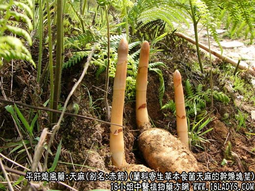
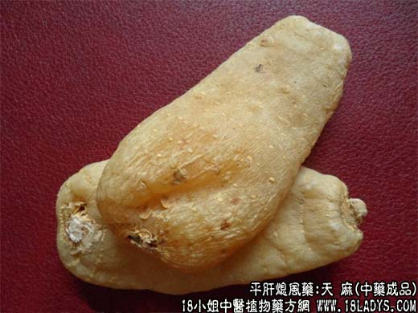
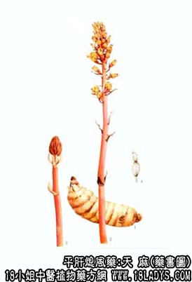

天麻为常用中药。始载《神农本草经》，列为上品，原名“赤箭”，因其茎色赤，直立似箭杆，故名。天麻之名首见于《开宝本草》。
别名：明天麻，赤箭。
来源：为兰科多年生寄生草本食菌植物天麻的干燥块茎。寄主为密环菌。野生于较湿润的林下腐植质土壤中。现各地引种栽培。
产地：生产于四川、云南、贵州、湖北、陕西等地。此外，西藏、吉林、辽宁、甘肃、河南亦有分布。
采集加工：冬春两季擦挖，冬季产者称“冬天麻”，春季产者称“春天麻”挖出后除去地上茎及附着得菌素，洗净泥土，及时擦去环节上的鳞叶及粗皮，随机用清水或白矾水微浸，以防变黑，再蒸透，取出晾干或烘干。在烘干过程中，天麻受热膨胀，可用竹针刺破压扁，以防空泡。
性状鉴别：块茎长椭圆形，略扁，皱缩而弯曲，大小不一，长5~15厘米，宽2~7厘米，厚0.3~2厘米。表面有黄白色或淡棕色，半透明，上端有茎痕，或红黄色的芽，习称呼“鹦哥嘴”或“红小辫”，下端有圆盘状的凹脐。全体多纵沟，并有擦落鳞叶形成的节状环纹。质坚硬，不易折断，断面平坦，角质状，淡黄白色或淡棕色。未蒸透者中间略有白碴，有时显裂隙。气微，味甘，微辛。
春麻与冬麻两者性状类似，唯冬麻肥厚呈油浸色，半透明，皮面光滑，皱纹较少，偶有鹦哥嘴但较短，坚实沉重，不易折断，断面明亮，如蜡状平坦。
以体大，肥厚，色黄白，质坚实，断面明亮，无空心者为佳。习惯认为冬麻优于春麻。
主要成分：含香草醇，香草醛、甙类、粘液质和微量氧生素A类物质。
功效与作用：祛风镇痉挛，其作用镇静、镇痛、抗惊厥。实验证明，天麻能提高点击痉挛的阈值，又能制止豚鼠实验性癫痫的发作。
炮制：切片，生用。
性味：甘，平。
归经：入肝经。
功能：平肝熄风，定惊。
主治：眩晕头痛，惊痫抽搐。
临床应用：为治疗眩晕，头痛的要药。其性虽微温，但不偏于发散，也不偏于滋补，在适当配伍下，内风、外风都可治疗。
1、用于治疗眩晕，尤其肝虚、肝风所致的眩晕，效果较好。前人的经验说，“眼虚头旋，虚风内作非天麻不能除”。现代应用天麻治疗见证肝虚的高血压、动脉硬化、耳源性眩晕（即美尼尔氏综合症）和一般体弱所致的眩晕，取得一定效果，常配钩藤、菊花灯，方如天麻钩藤饮。痰湿较重者配半夏、白术，方如半夏白术天麻汤（见半夏项下）。
至于血虚（如贫血）所致的眩晕，一般以补血为主，不宜多用天麻，以防其温燥之性进步伤阻。必需试用时，只能加载补血剂内，酌情服四、五服便止。
2、用于治疗头痛，尤其与肝风痰湿有关的偏头痛，效果比较确实，常配地龙、白花蛇、白芷、川芎等加强祛风镇痛作用，方入偏头痛汤。
3、用于风寒湿痹（偏重湿痹）肢体麻木瘫痪，治慢性风湿性关节炎，常配秦艽、羌活、牛膝、杜仲等。
4、用于抽搐，配其他熄风止痉药，如治破伤风配南星、白附子；治“流脑”、“乙脑”等传染病引起的脑神经刺激症状，配全蝎，僵蚕等，方入天麻驱风汤。
使用注意：1、与钩藤比较两者功用大同小异，都能治头痛晕眩，且常同用。其区别是：钩藤甘寒、偏于治因热而生风的头痛晕眩，天麻甘温而燥，偏于治风寒夹有痰湿引起的头痛晕眩；
2、如无天麻，可酌情选用下列其中一组药物代替：1、白蒺藜加钩藤；2、川芎加羌活、首乌、防风；3、土天麻。
用量：3~9g。
处方举例 ：1、天麻钩藤饮：天麻9g，钩藤18g（后下），石决明18g（先煎），栀子6g，黄芩9g，杜仲12g，牛膝15g，夜交藤12g，茯神9g，益母草15g，桑寄生15g，水煎服。
偏头痛汤：天麻15g，白芷12g，川芎9g，白花蛇9g，僵蚕6g，连翘9g，蝉蜕3g，竹茹6g，栀子6g，葛根6g，茵陈9g，水煎服。
注：1、天麻属于食菌植物，无根，也无正常的叶片，有极度退化的膜质鳞叶。全体不含叶绿素，依靠密环菌的养分生长。没有这种菌，天麻就不会生繁。
2、天麻是一种名贵药材，常有以下品种为伪充：
①茄科植物马铃薯（洋芋、土豆）的块茎、煮熟晒干。唯不具环节纹，亦无鹦哥嘴和凹脐，咬也不脆。
②羊角天麻，又名猪肚子，产于四川温州地区，甘肃亦产，原植物为菊科双舌蟹甲草或羽裂蟹甲草的根状茎。其形状各异，大的似纺锤形，小的形如橄榄。外皮黄白色，上有棕褐色小点（须根痕）。并有横环节。质坚体轻，断面多中空，角质状，当地农村常以此代替天麻药用。
③紫茉莉科植物紫茉莉根，刮去栓皮，煮熟晒干者。呈圆锥形，略似白芍。全体有细纵纹，并有残留稀疏的须根痕，顶端有茎基痕。质坚实，断面角质状。